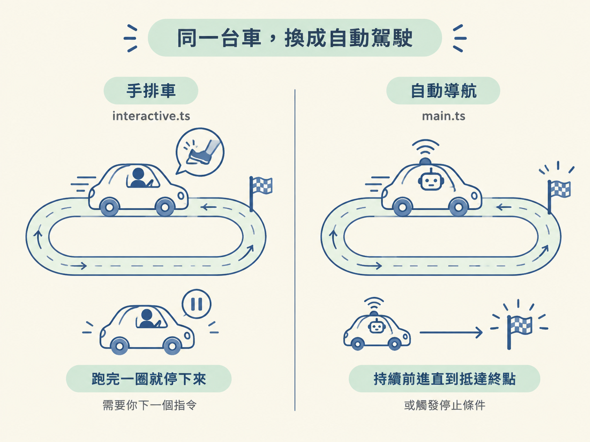
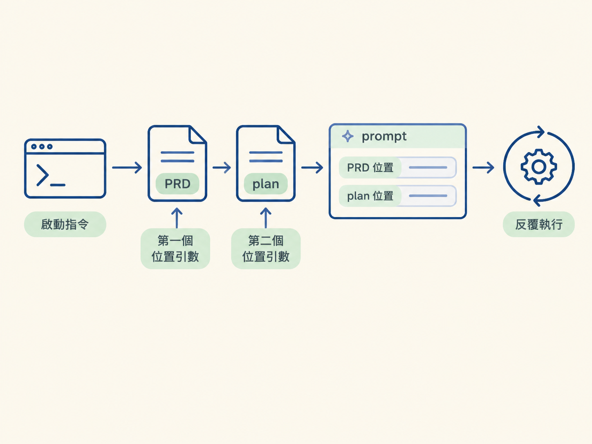

上一節我們用 interactive.ts 跑完了第一個 phase。你看著 agent 探索、寫程式、執行測試，最後完成 commit；但它停下來、控制權回到命令列之後，問題就來了：第二個 phase 要怎麼開始？
如果每個 phase 都要你手動重新執行一次，五個 phase 就得坐在螢幕前操作五次。這樣雖然能跑，但離「無人值守」還有一段距離。
你真正想要的情境是：把整份計畫交給它，去泡杯茶，回來時它已經往下完成好幾個 phase。要做到這件事，就得把「只跑一次」的 harness，改造成「會自己反覆執行」的 runner。這一節要認識的 sandcastle/main.ts，就是這個 runner。
學完這一節，你應該能說出 sandcastle/main.ts 這個 AFK runner 和 interactive.ts 的三個差異，也能用位置引數傳入 PRD 與 plan，啟動它執行。
先講一個重要前提：main.ts 不是另一套全新的系統。它用的還是同一支 Claude Code、同一個 Docker 沙箱，以及同一份 prompt.md。前一節學到的沙箱設定與 prompt 寫法，在這裡都可以繼續用。
真正改變的是「要跑幾次」。你可以把 interactive.ts 想成手排車：你踩一次油門，它跑完一圈，接著停下來等你下一個指令。main.ts 則像是同一台車裝上自動導航，會沿著同一段航程持續前進，直到抵達終點或觸發停止條件，中途不需要你一直回來操作。

這個差異可以收斂成三個地方。第一，核心呼叫從 interactive 換成 run。interactive 跑完一輪就把控制權交還給你；run 則會把同一段 prompt 放進迴圈，反覆執行。
第二，main.ts 加入 maxIterations，也就是迭代次數上限。它像里程表上的安全上限，避免 runner 沒有完成工作時，仍然無止境地繼續跑。
第三，它加入 completion signal，也就是完成訊號。agent 回報「沒事了」，runner 就知道工作完成了，不必硬是跑滿所有迭代次數。
interactive.ts | main.ts | |
|---|---|---|
| 跑幾輪 | 一輪，跑完就停 | 多輪，跑到停止條件出現 |
| 核心函式 | interactive | run |
| 停止方式 | 這一輪完成後結束 | maxIterations 或 completion signal |
| 輸入方式 | 互動式詢問檔案位置 | 命令列的兩個位置引數 |
interactive.ts 會在執行過程中詢問你「PRD 在哪裡」。但 main.ts 的目標是無人值守，因此不能等你中途回答；你必須在命令列啟動它時，就把兩份文件的位置傳入。
這兩個引數有固定順序：第一個是 PRD 檔，第二個是 plan 檔。
npx tsx sandcastle/main.ts prd/admin-analytics.md plans/admin-analytics-plan.md程式內部會把第一個引數存成 prd 變數，第二個存成 plan 變數，再把這兩個變數放進 prompt 裡的「PRD 位置」與「plan 位置」欄位，讓 agent 知道該去哪裡讀取這兩份文件。
因此，這一行命令的意思很直接：拿指定的 PRD 和 plan，啟動一個會自行往下執行的 runner。

agent 和模型也可以替換。你想使用哪個模型，可以直接傳給 Claude Code。課程錄製時最新的模型是 4.7，但講師自己偏好 4.6；這部分是使用者的選擇，不會改變 runner 的基本運作方式。
把它放回整體流程來看，interactive.ts 是「跑一圈」，main.ts 則是「跑一圈，再把這一圈放進迴圈裡」。我們沒有重新發明一套執行方式，而是把上一節已經驗證過的流程，包進一個能持續重複執行的外殼。
這也讓下一個問題變得很清楚：這個迴圈究竟靠什麼停下來？如果它一直跑下去，最先撐不住的可能不是程式，而是你的錢包。下一節會拆開這兩個煞車：maxIterations 與 completion signal。
main.ts是 Sandcastle 的 AFK runner。它沿用interactive.ts的 Claude Code、Docker 沙箱與同一份 prompt，主要差在三個地方：用run取代interactive、加入maxIterations，以及加入 completion signal。啟動時，把 PRD 與 plan 當成兩個位置引數傳入；agent 與模型則可以依需求自訂。